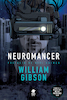
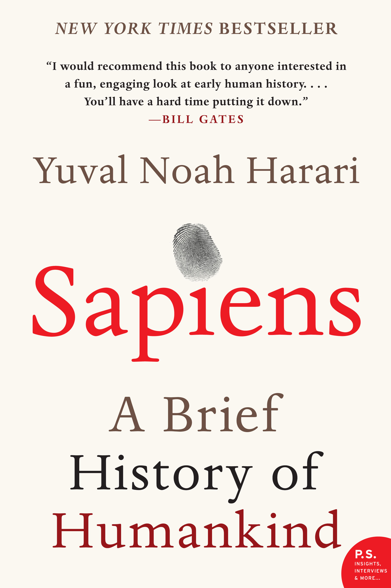
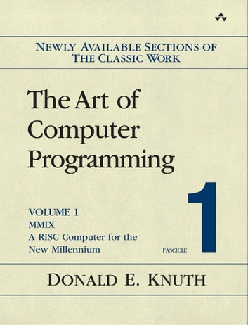

The Innovators

Neuromancer

The Martian

Sapiens: A Brief History of Humankind

The Pragmatic Programmer

Dune

Thinking, Fast and Slow

Ready Player One

The Art of Computer Programming

The Code Book

The Hitchhiker's Guide to the Galaxy